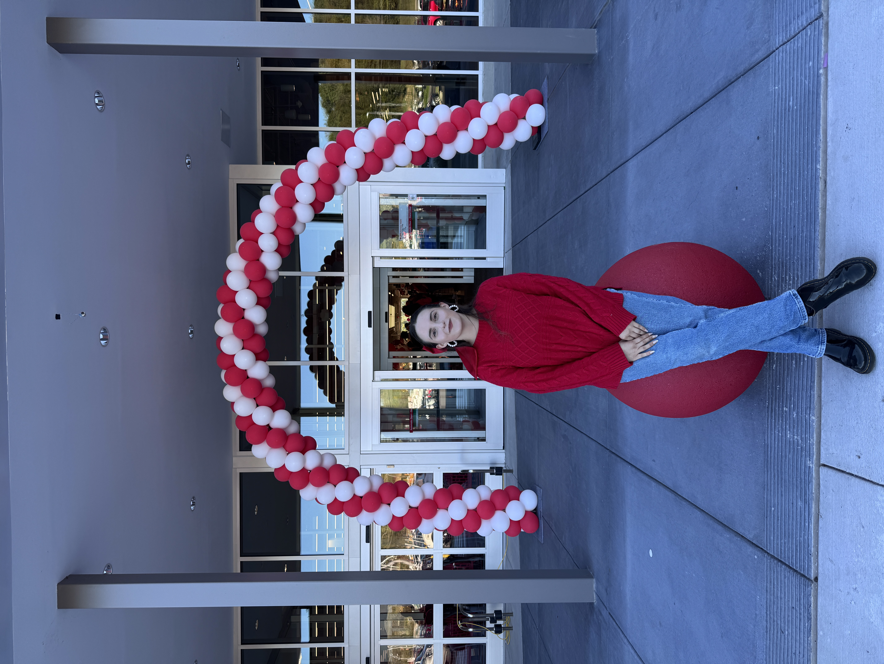

Image Styling


This is a sample of the body text using Helvetica Neue. It's clean and legible.
Paragraph - Default text size and spacing.
Hover over links to see transition effect.

This card layout uses the soft cream background. It's great for quotes, highlights, memories, or even photo descriptions throughout the site.